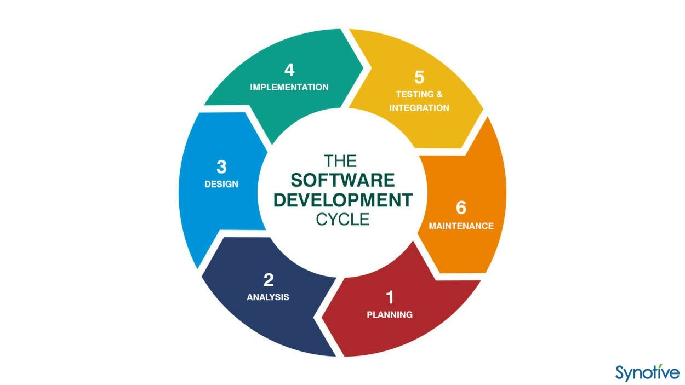
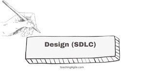

Introduction
The Software Development Life Cycle (SDLC) is a framework that defines the stages involved in the development of software applications. By integrating Cyber Threat Intelligence (CTI) into the SDLC, organizations can enhance their security posture and mitigate risks throughout the development process.
1. Planning
In the planning phase, security requirements are identified, and a project plan is created. Security objectives are set, and resources are allocated accordingly.
- Define security objectives
- Allocate resources
- Identify high-value assets
2. Requirements Analysis
During requirements analysis, security requirements are gathered alongside functional requirements. Threat modeling is conducted to identify potential security risks.

- Gather security requirements
- Conduct threat modeling
- Analyze risks and vulnerabilities
3. Design
The design phase involves creating secure architecture and design specifications. Secure design principles are applied to ensure the system is resilient to attacks.
- Apply secure design principles
- Create architecture diagrams
- Review design for security vulnerabilities
4. Implementation
During implementation, secure coding practices are followed to develop the software. Static code analysis tools are used to identify vulnerabilities early in the development process.
- Follow secure coding practices
- Use static code analysis tools
- Conduct code reviews
5. Testing
In the testing phase, various security testing methods are employed to identify and fix vulnerabilities. This includes penetration testing, vulnerability scanning, and security audits.
- Perform penetration testing
- Conduct vulnerability scanning
- Execute security audits
6. Deployment
During deployment, secure configuration management practices are applied. The system is monitored for any security incidents, and patches are applied as necessary.
- Apply secure configuration management
- Monitor for security incidents
- Apply patches and updates
7. Maintenance
The maintenance phase involves continuous monitoring and improvement of security measures. Incident response plans are implemented, and regular security training is conducted for staff.
- Continuous security monitoring
- Implement incident response plans
- Conduct regular security training
Interactive Example: Threat Modeling
This interactive diagram demonstrates how threat modeling can be used during the Requirements Analysis phase to identify potential security risks.
Tools and Techniques
We use a variety of tools and techniques to ensure security is embedded throughout the SDLC. Here are some examples:
- Nessus for vulnerability scanning
- OWASP ZAP for penetration testing
- SonarQube for static code analysis
Conclusion
By embedding security early in the SDLC, organizations can significantly reduce the risk of security breaches and ensure that their software systems are robust and secure.